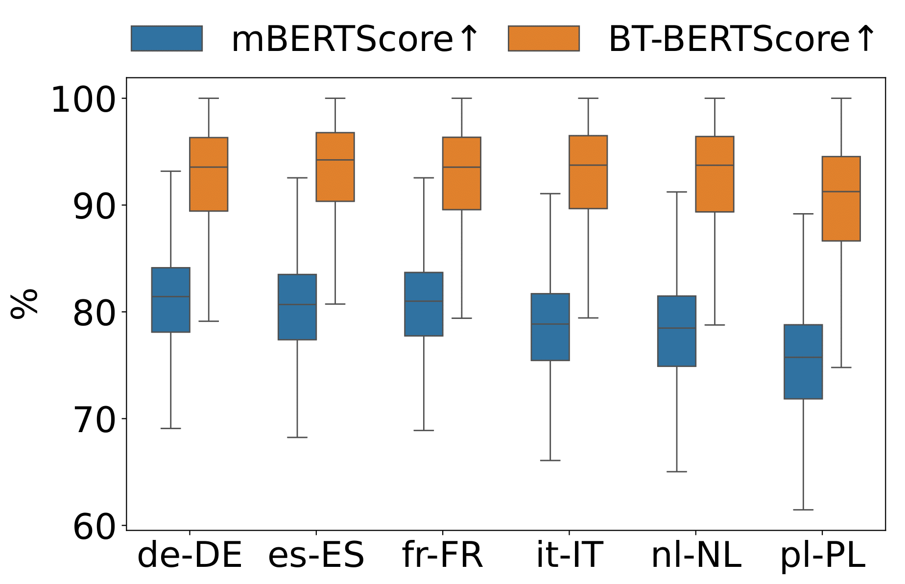
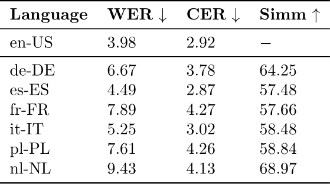
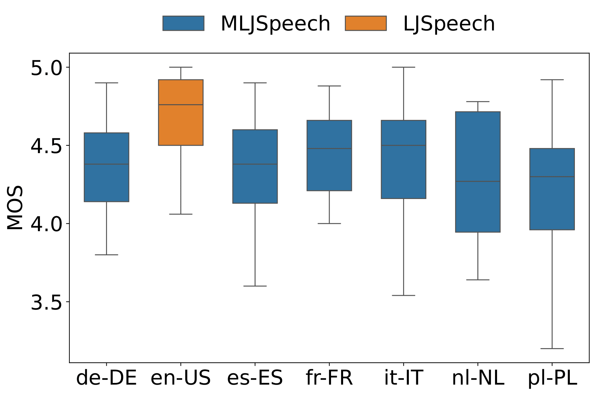

Figure 1: Multilingual and back translation BERT scores.

Table 1: Evaluation of correctness and coherence of synthesized and original en-US audios.

Figure 2: Human Mean Opinion Scores on LJSpeech and MLJSpeech.
| Original ID | Text | en-US | de-DE | es-ES | fr-FR | it-IT | nl-NL | pl-PL | |
|---|---|---|---|---|---|---|---|---|---|
| LJ016-0341 | The sufferer was stolid and reticent to the last. | ||||||||
| LJ016-0398 | As a special favor. | ||||||||
| LJ017-0210 | The first case was that of the 'Flowery Land'. | ||||||||
| LJ016-0335 | There was no interference with the crowd, which collected as usual, although not to the customary extent. | ||||||||
| LJ027-0048 | On the other hand are found structures which are perfectly homologous and yet in no way analogous. | ||||||||
| LJ028-0218 | Without a skirmish or a battle, he permitted them to enter Babylon, and, sparing the city, he delivered the King Nabonidus to him. | ||||||||
| LJ042-0158 | Left a far mean streak of independence brought on by neglect. | ||||||||
| LJ030-0141 | A subsequent bullet, which was lethal, shattered the right side of his skull. |